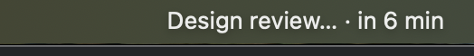
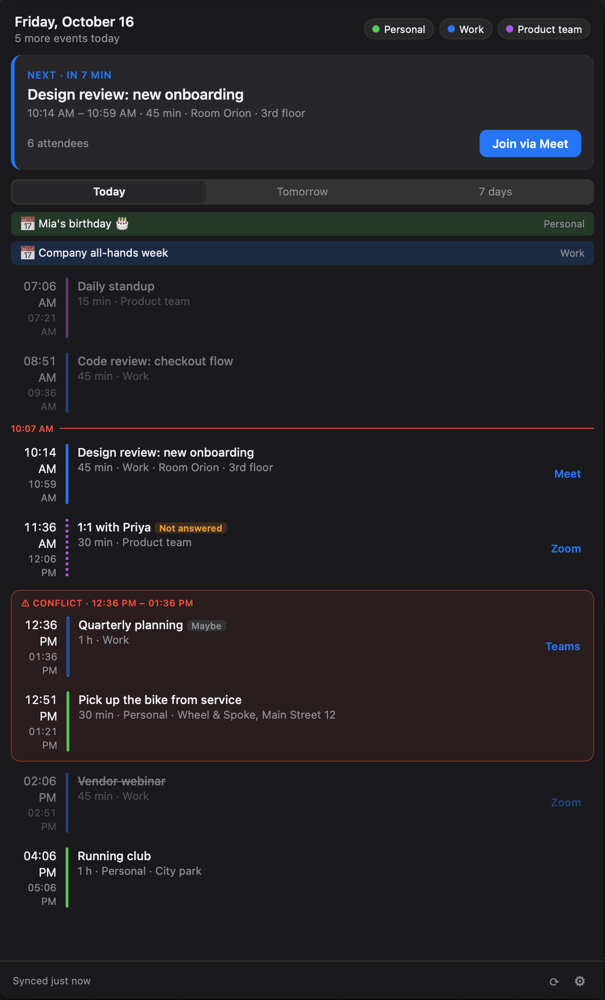

Your next meeting, one glance away
Do Not Forget is a free, open-source tray and menu bar app for Linux, macOS and Windows. It shows your next meeting, reminds you before it starts and lets you join or answer the invitation in one click.


What it does
- Next meeting in the trayTitle and countdown in the menu bar; click for the day's agenda.
- Google CalendarSeveral accounts at once, merged into one list, with the calendars you choose.
- Join in one clickGoogle Meet, Zoom and Teams links are found in your events.
- RSVPAnswer yes, maybe or no without opening your calendar.
- RemindersA notification before each meeting and a full-screen alert when it starts.
- MuteSilence reminders for an hour, for the day, or until you turn them back on.
How it uses your Google data
When you connect a Google account, Do Not Forget asks to see and respond to your calendar
events (calendar.events) and to see the list of your calendars
(calendar.calendarlist.readonly). It uses them only to show your upcoming
meetings, remind you of them and send the RSVPs you choose.
The app runs entirely on your computer and talks to Google directly. It has no servers and no analytics; your calendar data is never sent to the developers or anyone else. Sign-in tokens are kept only in your system's keychain, and disconnecting an account revokes its access. Details are in the privacy policy.
Open source
The source code is on GitHub under the MIT License. Bug reports, translations and contributions are welcome.